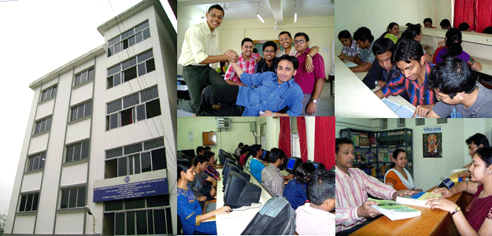
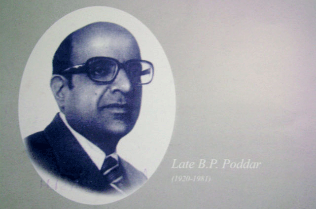

B. P. Poddar Institute Of Management and Technology
Affiliated to Maulana Abul Kalam Azad University Of Technology, West
Bengal [Formerly WBUT]
Recognised u/s 2f of UGC Act, 1956
Welcome to BPPIMT Salt Lake Campus
Located in Sector V Saltlake, Kolkata, the institute was set up as
a tribute to the memory of Shri B.P. Poddar (1920-1981), a great
philanthropist and educationist and founder of the Poddar Group,
one of the most respected corporate groups in the country today.
Mission
To emerge as a globally competent academic institute, excelling in
research and innovation by inculcating knowledge of science,
engineering, technology and management, striving for the growth of
socially responsible individuals.
Vision
To develop an Institution of Excellence for advancement of
Science, Technology & Social Sciences and for creation of
professionals with high sense of ethical values and commitment to
the Society, capable of functioning unfettered by the shackles of
caste, creed, political dogmas and religious parochialism, to
effectively contribute to and lead in the shaping of the nation.
History

B.P.Poddar Institute of Management and Technology (BPPIMT), Salt
Lake Campus was established in the year 2005, under the aegis of
B.P.Poddar Foundation for Education, a Trust dedicated to enriching
the quality of technical education in the country. The Institute was
set up as a tribute to the memory of Late Badri Prasad Poddar,
philanthropist and educationist and the founder of the B.P.Poddar
Group. The B.P. Poddar Institute of Managment & Technology is
affiliated to the West Bengal University of Technology, Kolkata. The
courses offered are structured according to prevailing international
standards. The Institute blends a dynamic and progressive approach
to education with high quality, innovative and result oriented
programmes which has been affiliated to the WBUT, Kolkata recognized
by UGC and conducts Bachelor of Business Administration (Hons),
Bachelor of Computer Application and Bachelor of Hospital Management
courses at the undergraduate level. The education system at the
institute encourages close interaction between faculty and students.
This helps the students to think creatively and develop
understanding and powers of critical evaluation.
Our Aspirations
We will strive to create the best career opportunities for all
students by imparting the right mix of Management and Technical
education, abreast of the latest trends in the industry
We will foster an open and collaborative environment for exchange
of ideas and best practices, paving the way to improve
interpersonal skills, creating an overall broader vision
We believe in catalyzing innovation that will precipitate
pedagogical excellence to ideate creative solutions to economic
and technical challenges
We will emphasize on imbibing strong ethical values and develop a
sense of responsibility towards our society and country
We will ensure that our quality of education lays the foundation
to enable students to assume leadership roles in organizations and
pursue higher education in esteemed international colleges in the
areas of applied research.
Core Values
Delivering innovative education products and services to bring out
industry-ready professionals, researchers, advanced learners,
educators and entrepreneurs, who can respect diversity and take best
care of their organization and society. “Om . Let all of us protect
each other together, may all of us enjoy together, may all of us
work together and let our study become radiant. Let there be no
hatred between us. Om Peace Peace Peace.” - Peace Mantra from
Upanishad
Honor Code
A guideline for the students:
Be Honest
Obey rules and regulations
Be Committed
Respect Others
Maintain Sustainability
Aspire for Excellence
Our Inspiration Late B.P. Poddar

Late Badri Prasad Poddar, was a great philanthropist and
educationist and the founder of the Poddar Group. He was keenly
interested in the development of technical education and was
associated with IIT Kharagpur as the Chairman. He was also the
Chairman of Calcutta Tramways Company and the Birla Industrial and
Technological Museum. He was a member of the Executive Committee of
the International Chamber of Commerce, a Member of the Governing
Body of the Jawaharlal Nehru University, a member of the Board of
Governors, Institute of Social Welfare and Business Management and
the Chairman of the Commission of Asian and Pacific Affairs. B.P.
Poddar Institute of Management & Technology was set up as a tribute
to the memory of him.
Location
Located in Sector V Saltlake, Kolkata, the institute was set up as
a tribute to the memory of Shri B.P. Poddar (1920-1981), a great
philanthropist and educationist and founder of the Poddar Group,
one of the most respected corporate groups in the country today.